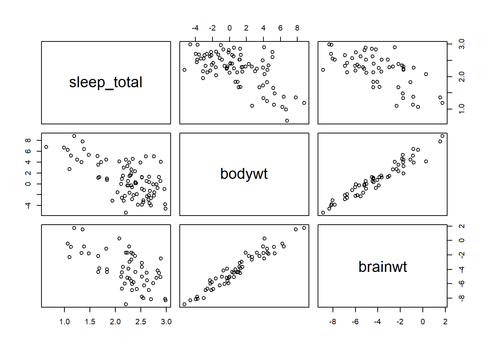
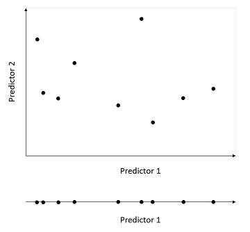
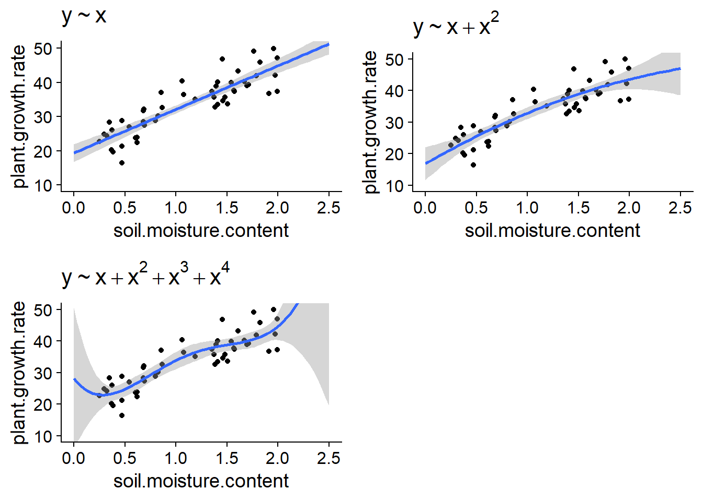
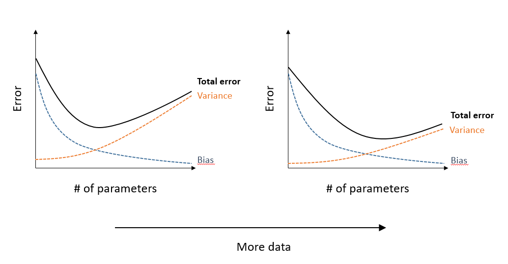

Model evaluation and selection
October 26, 2020
Objectives
Identify problems due to the collinearity of several predictors.
Identify problems related to underfitting and overfitting models.
Know the advantages and disadvantages of different methods to evaluate the fit of models.
Use AIC to compare different models.
Combine the predictions of several models.
Collinearity
In the previous class, we used the hills dataset, which presents record times (time, in minutes) for Scottish bike races based on the horizontal distance (dist, in miles) and the total change in altitude (climb, in feet).
library(MASS)
str(hills)## 'data.frame': 35 obs. of 3 variables:
## $ dist : num 2.5 6 6 7.5 8 8 16 6 5 6 ...
## $ climb: int 650 2500 900 800 3070 2866 7500 800 800 650 ...
## $ time : num 16.1 48.4 33.6 45.6 62.3 ...We note that the two predictors (dist and climb) are themselves correlated.
cor(hills$dist, hills$climb)## [1] 0.6523461The correlation between two predictors complicates the estimation of the effects of each predictor. Since the model coefficients represent the effect of one predictor when the others remain constant, when several of them vary together, it becomes difficult to isolate the effect of each. This problem is generalized to models with more than two predictors, if one of the predictors is correlated with a linear combination of the other predictors: this is called collinearity.
The vif function of the car package calculates the variance inflation factor (VIF) of each predictor.
library(car)
mod_hills <- lm(time ~ dist + climb, hills)
vif(mod_hills)## dist climb
## 1.740812 1.740812The VIF is equal to \(1 / (1 - R^2)\), where \(R^2\) is the coefficient of determination of a linear model of the predictor considered as a function of all the others. For example, if one of the predictors can be determined from the value of the others with a $R^2 $ of 0.9, VIF = 10. When the VIF of some predictors exceeds 10, it is recommended to eliminate one of the redundant predictors.
Example
The msleep data frame included with the ggplot package contains sleep data for different mammal species. We choose three columns corresponding to total sleep time, body weight and brain weight.
msleep2 <- dplyr::select(msleep, sleep_total, bodywt, brainwt)
summary(msleep2)## sleep_total bodywt brainwt
## Min. : 1.90 Min. : 0.005 Min. :0.00014
## 1st Qu.: 7.85 1st Qu.: 0.174 1st Qu.:0.00290
## Median :10.10 Median : 1.670 Median :0.01240
## Mean :10.43 Mean : 166.136 Mean :0.28158
## 3rd Qu.:13.75 3rd Qu.: 41.750 3rd Qu.:0.12550
## Max. :19.90 Max. :6654.000 Max. :5.71200
## NA's :27The bodywt and brainwt variables are very asymmetrical and vary over several orders of magnitude, thus we perform a logarithmic transformation of the three variables.
msleep2 <- log(msleep2)On a logarithmic scale, bodywt and brainwt are strongly correlated.
plot(msleep2)
Here is what happens if we fit a linear model using one or both of the predictors.
summary(lm(sleep_total ~ bodywt, data = msleep2))##
## Call:
## lm(formula = sleep_total ~ bodywt, data = msleep2)
##
## Residuals:
## Min 1Q Median 3Q Max
## -0.9757 -0.2712 -0.0096 0.2727 1.0004
##
## Coefficients:
## Estimate Std. Error t value Pr(>|t|)
## (Intercept) 2.31575 0.04647 49.830 < 2e-16 ***
## bodywt -0.10265 0.01389 -7.388 1.19e-10 ***
## ---
## Signif. codes: 0 '***' 0.001 '**' 0.01 '*' 0.05 '.' 0.1 ' ' 1
##
## Residual standard error: 0.4097 on 81 degrees of freedom
## Multiple R-squared: 0.4026, Adjusted R-squared: 0.3952
## F-statistic: 54.58 on 1 and 81 DF, p-value: 1.193e-10summary(lm(sleep_total ~ brainwt, data = msleep2))##
## Call:
## lm(formula = sleep_total ~ brainwt, data = msleep2)
##
## Residuals:
## Min 1Q Median 3Q Max
## -0.89025 -0.27043 -0.01841 0.30664 0.88271
##
## Coefficients:
## Estimate Std. Error t value Pr(>|t|)
## (Intercept) 1.69551 0.10037 16.892 < 2e-16 ***
## brainwt -0.12640 0.02103 -6.011 1.64e-07 ***
## ---
## Signif. codes: 0 '***' 0.001 '**' 0.01 '*' 0.05 '.' 0.1 ' ' 1
##
## Residual standard error: 0.3943 on 54 degrees of freedom
## (27 observations deleted due to missingness)
## Multiple R-squared: 0.4009, Adjusted R-squared: 0.3898
## F-statistic: 36.13 on 1 and 54 DF, p-value: 1.637e-07summary(lm(sleep_total ~ bodywt + brainwt, data = msleep2))##
## Call:
## lm(formula = sleep_total ~ bodywt + brainwt, data = msleep2)
##
## Residuals:
## Min 1Q Median 3Q Max
## -0.92817 -0.25572 -0.01949 0.28150 1.01779
##
## Coefficients:
## Estimate Std. Error t value Pr(>|t|)
## (Intercept) 2.317881 0.382108 6.066 1.42e-07 ***
## bodywt -0.105861 0.062787 -1.686 0.0977 .
## brainwt 0.002517 0.079212 0.032 0.9748
## ---
## Signif. codes: 0 '***' 0.001 '**' 0.01 '*' 0.05 '.' 0.1 ' ' 1
##
## Residual standard error: 0.3877 on 53 degrees of freedom
## (27 observations deleted due to missingness)
## Multiple R-squared: 0.4314, Adjusted R-squared: 0.4099
## F-statistic: 20.1 on 2 and 53 DF, p-value: 3.181e-07Compare the standard errors of the coefficients of the third model with those for each of the predictors considered separately. We can confirm that these variables are collinear with vif.
vif(lm(sleep_total ~ bodywt + brainwt, data = msleep2))## bodywt brainwt
## 14.67386 14.67386If you need to keep only one of the two variables of the model, which one should we choose?
We can use our prior knowledge or hypotheses about how the system works to determine which of the predictors is most relevant.
We can compare the fit of models using one predictor or the other.
The methods presented in the rest of this class address the need to compare different models explaining the same response variable. They apply to any case where we have several candidate models for the same problem.
Types of model errors
Example
Suppose we want to estimate the population density of the northern flying squirrel (Glaucomys sabrinus) according to different variables, such as:
- the type of stand (hardwood, coniferous, mixed);
- the age of the stand;
- average temperatures of the coldest and hottest month;
- the continuous forest area around the stand;
- the presence or absence of other small mammal species.
To do this, we have data from a limited number of sites (e.g. 40 stands). What are the advantages and disadvantages: (1) of a model including the maximum number of predictors and (2) a model including a reduced number (eg 1 or 2) predictors? What is the difference between the types of errors made in each case?
Model too simple: underfitting and bias
With a model that is too simple, we risk omitting predictors that affect the variable of interest. This is referred to as underfitting. For example, assume that the stand type is not included in the estimated model, but that the flying squirrel is more associated with conifers. In this case, model predictions will underestimate its population density in coniferous stands and overestimate its population density in hardwood stands.
Since this problem creates a systematic error independent of the number of observations, it is often called a bias.
Model too complex: overfitting and variance
In return, a model with too many parameters may measure associations between variables that are not generalizable effects, but rather coincidences of the dataset used. In that case, the model overfits the data. In general, the more predictors a model includes, the larger the sample needed to estimate effects with the same accuracy. From a graphical point of view, the combined range of \(m\) predictors creates a “surface” in \(m\) dimensions; the larger the number of dimensions, the more points it takes to fully cover the range of possible values (see illustration below).

The error due to overfitting is random (depends on sampling coincidences) and decreases by increasing the sample size, so it is often called a variance.
Another example: fitting a polynomial function
During the last class on linear regression, we saw the example of the growth of a plant species as a function of soil moisture. The graphs below show the fit of these data by regressions using polynomials of degree 1 (straight line), 2 and 4.

If the linear model may underfit the data here (there appears to be a curvature in the scatter plot), the model of degree 4 clearly overfits if we look slightly past the range of the data.
Summary: Sources of error and complexity of models
The exact function linking the response to the predictors is unknown.
A model that has more adjustable parameters approximates this function with less bias (systematic error), but more variance (sensitivity to random variations in data). The total error is minimized as some number of parameters.
With a larger sample, the bias remains the same, but the variance decreases. Not only does the total error decrease for all models, but the optimal number of parameters (which minimizes the total error) increases, as shown in the graph below.

Prediction and explanation
The criteria presented in this class are based on the predictive ability of the models. In other words, we are looking for the model for which the predictions will come closest to the observed values for new samples (different from those used to estimate model parameters).
It often happens, particularly in an experimental context, that the purpose of a model is not necessarily to predict the response, but rather to identify the causes (explanation). In this case, the desire to limit the complexity of the models reflects the principle of parsimony, or “Occam’s razor”, according to which it is preferable to use the minimum of causes necessary to explain a phenomenon.
Criteria for comparing models
In this section, we will see different statistical criteria for comparing the fit of different models to estimate the same response variable.
Coefficient of determination (\(R^2\))
The coefficient of determination indicates the fraction of the total variance of the response that is explained by the model. In R, the result of lm reports two versions of \(R^2\), Multiple R-squared and Adjusted R-squared. The first is the \(R^2\) we have already seen, based on the residual and total sum of squares:
\[ R^2 = 1 - \frac{\sum_{i=1}^n (y_i - \hat{y_i})^2}{\sum_{i=1}^n (y_i - \bar{y})^2} \]
The “multiple” \(R^2\) always increases when adding a new predictor to the model, since each new predictor has a correlation (even if minimal and random) with the response. That measure is biased towards more complex models.
The adjusted \(R^2\) divides each sum of squares by the appropriate number of degrees of freedom. Since a model with more parameters has fewer residual degrees of freedom, the adjusted \(R^2\) may decrease if we add a parameter that does not contribute enough to explain the response. It is therefore a less biased estimator of the population \(R^2\).
Either version of \(R^2\) is suitable for comparing two linear models with the same number of adjustable parameters. However, the adjusted \(R^2\) does not penalize more complex models as much as the AIC, which will be presented later.
Significance tests
If two models only differ by one predictor, e.g.: y ~ x1 + x2 and y ~ x1 + x2 + x3, we can choose the more complex model if the effect of the new predictor x3 is significant. We have already used this technique to determine whether or not to include the interaction term in a two-factor ANOVA model.
There are sequential methods (stepwise) that choose between more than two models by adding or removing one variable at a time. These methods will be presented in more detail later. For the moment, note that the selection of models based on significance tests has several disadvantages.
The \(p\)-value measures the probability of obtaining the observed results according to the null hypothesis, not the predictive power of the model. Therefore, it helps us answer questions like: “Is the effect of \(x_3\) significantly different from zero?”, but not: "What is the best model between \(y \sim x_1 + x_2\) and \(y \sim x_3\)?
The significance threshold for the inclusion of a variable (e.g. \(\alpha = 0.05\)) is arbitrary.
With sequential methods, we must consider the increase in the probability of type I error (problem of multiple comparisons).
Validation set
As we saw earlier, a model with several parameters can overfit the data, that is, it detects fortuitous associations between variables found in one specific sample, which cannot be generalized to other samples.
From this perspective, the best way to evaluate the predictive power of a model is to measure its prediction error (for example, the residual sum of squares: \(\sum (y_i - \hat{y_i})^2\)) for a different dataset from the one used to estimate the model parameters. For example, with measurements taken at 40 sites, we can estimate the parameters from the data of 30 sites (randomly selected), then evaluate the prediction error of the model on the 10 remaining sites.
This separation of the data into a training set and a validation set is used quite frequently when a very large sample is available. It is best to put most of the data in the training set, for example a 70%/30% or 80%/20% split.
For smaller datasets, this type of validation is not efficient. On the one hand, we can not afford to leave aside some of our data for validation, and on the other hand, a small validation set (e.g. 10 cases) is not very representative.
Cross-validation
Cross-validation consists in randomly dividing the observations into groups and measuring the prediction error of the observations of a group according to a model adjusted to the remaining observations.
For example, if each group has only one observation (leave-one-out cross-validation), the sum of the square prediction errors is equal to \(\sum (y_i - \hat{y_i})^2\), where each predicted value \(\hat{y_i}\) comes from the model fitted without observation \(i\). If we use this method to compare the prediction error of different models from \(n\) observations, each of the models must be fitted \(n\) times, leaving aside one observation each time.
If the number of observations \(n\) is large, it may be more practical to divide the observations into \(k\) groups (k-fold cross-validation), for example \(k\) = 10, and to fit each model \(k\) times, leaving one group aside each time.
Cross-validation can be coded in R using a loop, but there are also packages where these functions are already coded and ready to be applied to various models, such as the cvTools package.
Comparison of models with AIC
Origin
The Akaike Information Criterion (AIC), proposed by Hirotugu Akaike in 1973, compares the fit of different models.
AIC is based on information theory. Imagine a function \(f\) that associates to each individual in the population a value the exact value of the response variable \(y\), while \(g\) is a model that tries to approximate \(f\). The AIC approximates the loss of information incurred by estimating the true distribution \(f\) by the model \(g\).
How can we estimate the “distance” between our model and an ideal model \(f\) which in unknown? In fact, the AIC measures this distance up to a constant, which is sufficient to compare different models according to their relative level of fit. The absolute value of the AIC has no meaning, all that matters is the difference in AIC between models.
Definition of AIC
AIC is defined as:
\[ AIC = -2 \log(L) + 2 K \]
where \(L\) is the likelihood function and \(K\) is the number of parameters estimated by the model. According to this criterion, a smaller AIC corresponds to a better model.
The likelihood \(L(\theta | y)\) is equal to the probability of the observed values of \(y\) according to the value of the model parameters \(\theta\). The maximum likelihood method estimates model parameters as those that maximize the likelihood. This is a general method for estimating the parameters of a model; for a linear model, the maximum likelihood gives the same estimates as the least squares method. The value of \(L\) at its maximum, corresponding to the estimated parameters of the model, is therefore used in the AIC equation above.
Like the \(R^2\), the likelihood tends to increase with each parameter added to the model. The second term of the AIC, proportional to the number of estimated parameters \(K\), therefore serves to penalize more complex models.
Note
- For a linear model, \(K\) must count the intercept and the estimated residual variance (\(\sigma^2\)).
E.g.: For the model \(y = \beta_0 + \beta_1 x_1 + \beta_2 x_2 + \epsilon\), \(K = 4\) since we estimate three \(\beta\) coefficients as well as the variance of the \(\epsilon\).
- The AIC could have been defined as \(-\log(L) + K\). The factor of 2 has been added for historical reasons (to link the AIC with other existing measures of fit).
AIC and cross-validation
It has been shown that the comparison of models with the AIC is equivalent to a leave-one-out cross-validation. Thus, the AIC allows us to estimate the predictive power of our models on new data, without having to repeatedly fit each model several times, as in the cross-validation method.
AICc for small samples
The AIC formula presented above is a good approximation when the number of observations \(n\) is sufficiently large. If \(n\) is small relative to the number of estimated parameters (if \(n/K < 40\), according to the Burnham and Anderson manual), this formula does not penalize complex models enough. In this case, the AIC is replaced by the AICc, which includes an additional correction:
\[ AICc = -2 \log(L) + 2 K \left( \frac{n}{n-K-1} \right) \] The fraction \(n/(n-K-1)\) is greater than 1, so the second term of the AICc is slightly larger than \(2K\), but the difference between the two decreases as \(n\) increases.
When comparing several models, the same metric must be used for each one. The AICc is therefore used for all models as soon as one of the models has a small \(n/K\) ratio.
Ranking models with AIC
As mentioned above, the absolute value of the AIC is not important, only differences in AIC between models matter. After calculating the AIC for different models, we rank them according to the difference between their AIC and the minimum AIC (which corresponds to the best model): \(\Delta AIC = AIC - \min AIC\). The best model has a \(\Delta AIC = 0\).
Of course, since our data are based on random sampling, it is not certain that the best model identified by the AIC would still be the same with a different sample.
The expression:
\[ e^{-\frac{\Delta AIC}{2} } \]
corresponds to the evidence ratio of each model vs. the one having the minimum AIC. For example, \(\Delta AIC = 2\) corresponds to a ratio of 0.37 (~3 times less likely), while \(\Delta AIC = 10\) corresponds to a ratio of 0.0067 (~150 times less likely).
If we have \(m\) candidate models, we can normalize the evidence ratios by their sum to obtain the Akaike weight \(w_i\) of model \(i\).
\[ w_i = \frac{e^{\frac{-\Delta AIC_i}{2}}}{\sum_{j=1}^{m} e^{\frac{-\Delta AIC_j}{2}}}\]
Since the sum of the $ w_i $ equals 1, these weights represent the probability that each model would be identified as the best model by the AIC, if the sampling was repeated several times.
Example
We use Johnson and Simberloff’s dataset of the number of vascular plant species from different British Isles, which was already introduced in a previous lab.
iles <- read.csv("../donnees/britain_species.csv")
str(iles)## 'data.frame': 42 obs. of 7 variables:
## $ island : chr "Ailsa" "Anglesey" "Arran" "Barra" ...
## $ area : num 0.8 712.5 429.4 18.4 31.1 ...
## $ elevation : int 340 127 874 384 226 1343 210 103 143 393 ...
## $ soil_types : int 1 3 4 2 1 16 1 3 1 1 ...
## $ latitude : num 55.3 53.3 55.6 57 60.1 54.3 57.1 56.6 56.1 56.9 ...
## $ dist_britain: num 14 0.2 5.2 77.4 201.6 ...
## $ species : int 75 855 577 409 177 1666 300 443 482 453 ...First, we modify the dataset to exclude the island of Great Britain and to apply a logarithmic transformation to the size of the islands, their distance from Great Britain and their number of species.
iles2 <- filter(iles, island != "Britain") %>%
mutate(log_area = log(area), log_dist = log(dist_britain),
log_sp = log(species))The most complex model that we consider is the following, where the number of species depends on the size of the island, its distance from Great Britain and its latitude.
mod_comp <- lm(log(species) ~ log(area) + log(dist_britain) + latitude, data = iles2)
summary(mod_comp)##
## Call:
## lm(formula = log(species) ~ log(area) + log(dist_britain) + latitude,
## data = iles2)
##
## Residuals:
## Min 1Q Median 3Q Max
## -1.19638 -0.09484 0.04124 0.22668 0.52043
##
## Coefficients:
## Estimate Std. Error t value Pr(>|t|)
## (Intercept) 14.36786 1.94448 7.389 8.65e-09 ***
## log(area) 0.21112 0.03165 6.670 7.83e-08 ***
## log(dist_britain) 0.02452 0.05251 0.467 0.643
## latitude -0.16775 0.03624 -4.629 4.42e-05 ***
## ---
## Signif. codes: 0 '***' 0.001 '**' 0.01 '*' 0.05 '.' 0.1 ' ' 1
##
## Residual standard error: 0.3883 on 37 degrees of freedom
## Multiple R-squared: 0.6941, Adjusted R-squared: 0.6693
## F-statistic: 27.99 on 3 and 37 DF, p-value: 1.267e-09Let’s first check the diagnostic plots for the full model:

Three islands have large negative residuals (fewer species than expected) and are far from the normal Q-Q line, but we consider the overall fit acceptable.
Next, we create a list of models that include only one or two predictors from the full model, as well as a null model: log_sp ~ 1, which represents a constant function (independent of the predictors).
liste_mod <- list(
nul = lm(log_sp ~ 1, iles2),
area = lm(log_sp ~ log_area, iles2),
dist = lm(log_sp ~ log_dist, iles2),
lat = lm(log_sp ~ latitude, iles2),
area_dist = lm(log_sp ~ log_area + log_dist, iles2),
area_lat = lm(log_sp ~ log_area + latitude, iles2),
dist_lat = lm(log_sp ~ log_dist + latitude, iles2),
comp = lm(log_sp ~ log_area + log_dist + latitude, iles2)
)We are now ready to compare these models with the AIC. We will use the AICcmodavg package, which has several functions for model comparison and multimodel inference.
The full model here has 5 estimated parameters and 41 observations, so it is better to use the AICc. The AICc function calculates the AICc for a single model.
library(AICcmodavg)
AICc(mod_comp)## [1] 46.29878Instead of calling AICc separately for each model, we will use theaictab function to produce an AICc comparison table from our list of models.
aictab(liste_mod)##
## Model selection based on AICc:
##
## K AICc Delta_AICc AICcWt Cum.Wt LL
## area_lat 4 43.94 0.00 0.77 0.77 -17.41
## comp 5 46.30 2.36 0.23 1.00 -17.29
## area_dist 4 62.42 18.49 0.00 1.00 -26.66
## area 3 69.16 25.23 0.00 1.00 -31.26
## lat 3 74.93 31.00 0.00 1.00 -34.14
## dist_lat 4 76.07 32.13 0.00 1.00 -33.48
## dist 3 78.85 34.92 0.00 1.00 -36.10
## nul 2 87.47 43.53 0.00 1.00 -41.58The table presents the models in ascending order of AICc, with the following additional information:
- The values of \(\log(L)\) (
LL) and \(K\) used in the calculation of the AICc. - The \(\Delta AICc\) (
Delta_AICc), the Akaike weights (AICcWt) and the cumulative weights (Cum.Wt).
We see that the model including the area and latitude receives 77% of the weight, the complete model receives 23% of the weight, and the rest of the models have a negligible weight.
Tips and things to watch for
For the AIC values (or AICc) to be comparable, all models must have the same response variable. As an example, we cannot compare models where the response is
specieswith others where the response islog(species).Each model must also be based on the same set of observations. Particular attention should be paid to missing
NAvalues in R. R automatically excludes from a model any row that has a missing value for one of the variables included in the model. Before estimating a series of models, be sure to eliminate all rows that have at least one missing value for one of the variables of interest.In the previous example, all models were nested, that is, each model contained a subset of the predictors of the full model. The AIC can also compare non-nested models.
The AIC compares models with each other, but does not tell us if the “best” model has a good fit. For a case where all models are nested, it is sufficient to check the fit of the most complex model, as we did above. In this case, any simpler model with a better AIC will also have a good fit.
In the example, the two predictors of the best model according to the AIC (
log_areaandlat) were also the two predictors with a significant effect in the full model. This is not always the case.Avoid relying on the \(p\)-values and confidence intervals of the parameters of the best model chosen by the AIC. The results from a single model do not take into account the fact that we compared several models to choose the best one in the end; like all multiple comparison problems, the \(p\)-values and confidence intervals of the chosen model will be too optimistic.
How to choose the set of models to compare?
In their textbook on model selection with AIC (see the references section at the end), Burnham and Anderson recommend choosing a restricted set of models based on subject knowledge and interesting scientific hypotheses.
It is important to note that the number of possible models increases rapidly with the number of predictors, even if we limit ourselves to linear models without interactions. For \(k\) predictors, there are \(2^k\) possible models. In the previous example, we had 8 possible models for 3 predictors; with 7 predictors, that number increases to 128!
Stepwise selection algorithms
There are forward, backward and bidirectional stepwise selection algorithms, like the stepAIC function in R, which aim to find the best model according to the AIC without having to evaluate all the possible models.
For example, a forward selection process works like this:
- Calculate the AIC of the null model (no predictors);
- Evaluate all models with 1 predictor (
y ~ x1,y ~ x2, etc.), keep the best one if its AIC is less than that of the null model. - Evaluate all models with 2 predictors, including the 1st predictor chosen in Step 2, keep the best one if its AIC is better than the model from Step 2.
- Continue this way until none of the more complex models get a lower AIC than the model chosen in the previous step.
Stepwise methods have several disadvantages:
- It is not guaranteed that they will find the best model.
- These methods allow model selection, but without being able to calculate Akaike weights, we cannot know if several other models were almost as good as the selected one.
- They encourage the comparison of a very large number of models, which is not advised for the reasons mentioned above.
Multimodel predictions
As in the last lab, suppose that we wanted to predict the number of species for new islands with known predictor values.
iles_nouv <- data.frame(area = c(1, 40), dist_britain = c(5, 20),
latitude = c(60, 55)) %>%
mutate(log_area = log(area), log_dist = log(dist_britain))
iles_nouv## area dist_britain latitude log_area log_dist
## 1 1 5 60 0.000000 1.609438
## 2 40 20 55 3.688879 2.995732We could make the predictions from the best model identified by the AIC. However, when several models are quite plausible, it is possible to improve the predictions by using the weighted average of the values predicted by the different models, based on their Akaike weights:
\[ \hat{y} = \sum_{i = 1}^m w_i \hat{y_i} \]
In this equation, \(\hat{y_i}\) is the prediction from model \(i\) and \(\hat{y}\) is the multimodel average prediction.
In the AICcmodavg package, the modavgPred function calculates multimodel average predictions.
modavgPred(liste_mod, newdata = iles_nouv)##
## Model-averaged predictions on the response scale
## based on entire model set and 95% confidence interval:
##
## mod.avg.pred uncond.se lower.CL upper.CL
## 1 4.411 0.183 4.053 4.769
## 2 5.979 0.089 5.803 6.154Note that the interval provided is a confidence interval, not a prediction interval. In other words, it tells us about the uncertainty of the average value of log_sp for these predictor values, not the uncertainty of log_sp for a single island.
Summary
The variance inflation factor (VIF) indicates whether the value of a predictor is strongly correlated with that of the other predictors. A high VIF makes it difficult to estimate coefficients for correlated predictors.
The selection between several models with different levels of complexity requires a compromise between bias (underfitting) and variance (overfitting).
To estimate the goodness of fit of a model, it is useful to compare its predictions to new observations, different from those used to estimate the parameters of the model.
The AIC (or AICc, for small samples) is based on the likelihood of the model, with a penalty for models with a larger number of parameters.
AIC approximates the relative predictive ability of different models and can therefore be used to rank them.
The absolute value of AIC has no meaning. Only AIC differences between models based on the same observations can be interpreted.
Akaike weights, calculated from AIC differences between models, estimate the probability that each model would be identified as the best model if sampling was repeated. These weights are also used to average the predictions of different models.
References
Burnham, K.P and Anderson, D.R. (2002) Model selection and multimodel inference : a practical information-theoretic approach, 2nd ed. Springer-Verlag, New York.
Anderson, D.R. and Burnham, K.P. (2002) Avoiding pitfalls when using information-theoretic methods. The Journal of Wildlife Management 66: 912-918.